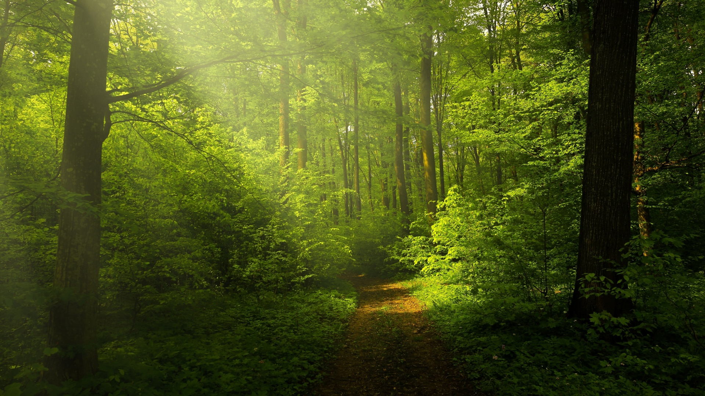
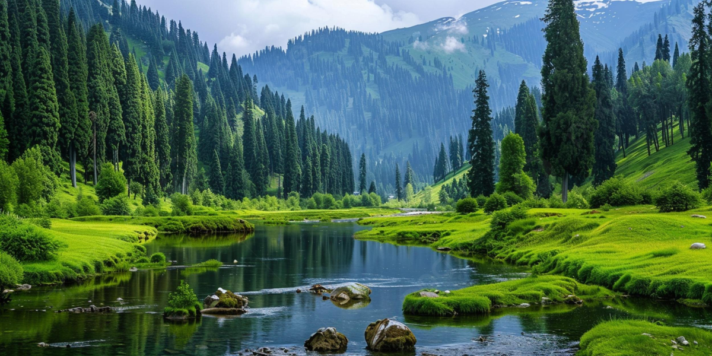
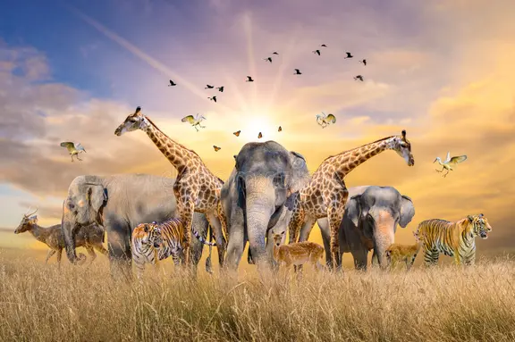

NATURE
Grown by Nature, Loved by You
FOREST

- A forest is a complex ecological system dominated by trees, forming extensive terrestrial ecosystems across the globe.
- Forests cover approximately 31% of the world's land area, spanning more than 4 billion hectares
- These ecosystems are recognized for their dense tree cover, but definitions can vary depending on tree height, density, ecological function, or legal standing.
- Occur in regions where the warmest month exceeds 10°C (50°F) and yearly precipitation is more than 200 mm (8 inches)
MOUNTAINS
- mountain with trees refers to any mountain landscape that supports significant tree growth—usually seen as forests or woodlands carpeting its slopes.
- These environments are found on all cont biodiversity, water cycles, and climate regulation.
- Elevation Gradients: Trees typically dominate the lower and mid-elevations of mountains. The type and density of trees change as elevation increases due to temperature and environmental shifts.

RIVER

- Rivers are flowing bodies of freshwater that shape landscapes, connect habitats, and sustain life—both within their waters and far beyond their banks
- They originate from mountain sources or springs, travel through forests and plains, and eventually reach lakes, seas, or oceans.
- Habitats for Biodiversity: River ecosystems support countless plant, animal, fungal, and microbial species. They are home to fish, amphibians, aquatic plants, invertebrates, and a diversity of bacteria that drive nutrient cycles
ANIMALS
- Key Groups of River Animals:
Rivers are dynamic habitats supporting a striking variety of animal species, many specially adapted to life in moving
- mammals Otters: Playful and agile swimmers, they are top river predatorversity.
- River dolphins: Notably the Gangetic dolphin, an apex predator in its ecosystem.baras: The largest rodent, closely tied to riverbanks in South America.
